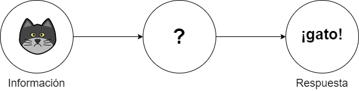
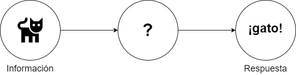
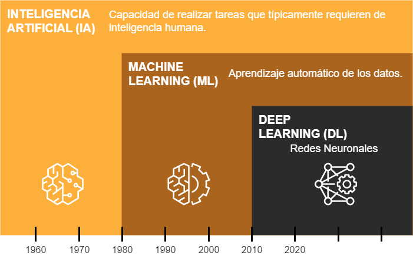

¿Qué es la Inteligencia Artificial?#

2023-05-26
El término Inteligencia Artificial surgió a finales de los años 1950 y entonces significaba algo diferente de lo que hoy se entiende por ella.
En aquel entonces era todo aquello que la tecnología prometía en cuanto a inteligencia de las máquinas. Los años finales de la década de los cincuenta e inicios de los sesenta fueron esplendorosos en este sentido: los primitivos ordenadores de aquel tiempo aprendieron a jugar a las damas, resolvían problemas lógicos e incluso eran capaces de aprender idiomas. Era asombroso. Se lanzaron las campanas al vuelo y predijeron que en pocos años la IA superaría al ser humano.
Se equivocaron. La tecnología aún no estaba lo suficientemente desarrollada y no era posible llevar a cabo las ideas que se planteaban sobre el papel. Las expectativas se desinflaron, lo cual llevó a un periodo de tiempo conocido como Invierno de la IA, en el que se congelaron las inversiones y las investigaciones en este campo.
Hubo sucesivos altibajos, periodos en los que parecía que llegaba la primavera, pero luego los proyectos no terminaban de dar resultados y se volvían a defraudar las expectativas puestas sobre la IA. Hasta el punto de que Inteligencia Artificial se volvió un término con mala prensa cuyo uso se trató de evitar a la hora de referirse a los avances en este terreno, para no ahuyentar a los inversores.
Los mayores progresos fueron llegando de la mano del Aprendizaje Automático, más conocido como Machine Learning. Hasta entonces la inteligencia se había introducido en los ordenadores a través de instrucciones definidas de forma explícita, es decir, mediante la forma clásica de programar un ordenador. Sin embargo, con Machine Learning era la propia máquina quien aprendía las características del sistema a partir de datos de ejemplo suministrados. Constituía una gran ventaja a la hora de lograr los parámetros de sistemas complejos.
Los algoritmos de Machine Learning fueron implementándose de forma creciente en aplicaciones reales con la llegada de Internet y la mayor disponibilidad de datos. Los modelos resolvían tareas concretas de búsqueda de patrones y predicción de resultados futuros. Sectores como el financiero y el del comercio electrónico fueron incorporándolos con éxito. Se automatizaron sistemas de recomendación, detección, segmentación, previsión y demás tareas, aumentando así la inteligencia de las empresas y los negocios.
Sin embargo, seguían pendientes de ser resueltos multitud de otras aplicaciones más complejas y habitualmente más asociadas con las capacidades de la inteligencia humana. Por ejemplo, la capacidad de mantener una conversación que suene natural, como con una persona. O la de identificar elementos en una imagen. Pensemos en el siguiente cometido, el de recibir la información por medio de una imagen y dar como resultado su identificación.

¿Cómo hacer que un ordenador solucione esta tarea? La forma tradicional de hacerlo no parece sencilla. Habría que definir exactamente qué hacer con cada píxel de la imagen y después programar esas instrucciones en el ordenador, una a una. «Así es como debes analizar los píxeles que te doy y así es cómo debes deducir si es un gato o no». Se ha de escribir una receta que además funcione en todas circunstancias: ¿funcionará con una imagen completamente diferente de un gato? Parece realmente complicado escribir estas reglas.

Para nosotros sin embargo es sencillo. Nuestro cerebro recibe la información a través de los sentidos (imagen de un gato), y obtenemos la respuesta como por arte de magia («¡gato!»). Lo hacemos sin saber cómo lo hacemos. Sencillamente lo sabemos. Hacemos algo con esos píxeles en nuestra mente, pero no sabemos qué es eso que estamos haciendo. No tenemos ni idea de cómo funciona. No es de extrañar que no sepamos expresarlo y definir las reglas a un ordenador.
La teoría de las redes neuronales es conocida desde los años cincuenta, aunque apenas se había puesto en práctica. Algoritmos matemáticos basados en una estructura de nodos interconectados (como las neuronas de nuestro cerebro) capaces de aprender a solucionar problemas a base de un entrenamiento con datos en los que se busca optimizar el resultado. Sistemas tremendamente flexibles, capaces de abordar los problemas más complejos, pero con dos necesidades imperiosas: una gran capacidad de computación de los ordenadores y una gran cantidad de datos para entrenarlos. A partir de la década de 2010 se empezó a disponer de ambos recursos en cantidades suficientes.
Y con el despegue de esta tecnología, los algoritmos basados en redes neuronales evolucionaron hacia la sofisticación y se hicieron conocidos como modelos de Deep Learning (aprendizaje profundo). En ellos, entre las entradas suministradas y la salida producida, lo que hacen las capas intermedias de nodos es desconocido. Estos sistemas funcionan como una caja negra dentro de la cual no se sabe con qué criterios se valoran las señales, solo se sabe que dan un resultado deseado como fruto del aprendizaje al que han sido sometidos.
Ni más ni menos que lo que sucede con la mente humana. Este hecho, junto con los paralelismos de los nodos-neuronas y el hecho de que con ellos se pueda empezar a dar respuesta a problemas de verdadera inteligencia humana, hizo que se recuperara término Inteligencia Artificial, ahora ya asociado a Deep Learning.

El cambio de paradigma que se había producido con Machine Learning y el aprendizaje automático a partir de los datos, con la Inteligencia Artificial se vuelve norma. Al fin y al cabo, en el llamado Machine Learning clásico los modelos son interpretables y aún se puede seguir la pista analítica de lo que están haciendo. Sin embargo, las tripas de la Inteligencia Artificial son poco menos que inescrutables, y con ellos la única forma de hablar es la de darles de comer ejemplos.
Esto también sucede entre los seres humanos. Cuando las personas nos comunicamos los unos con los otros, por ejemplo para que alguien haga algo por nosotros, tenemos la posibilidad de dar instrucciones precisas. Pero más habitualmente, y sobre todo cuando definirlo resulta difícil (o imposible), lo que hacemos es dar ejemplos. «Mira aquí estos ejemplos, quiero que hagas uno como estos, y luego tu ya te arreglarás». Así es como lo hacemos a menudo.
Pues bien, la Inteligencia Artificial es esta herramienta que nos permite comunicarnos con las máquinas a base de darles ejemplos, de esta manera tan natural para nosotros que sin embargo hasta hace poco nos estaba vedada con respecto a los ordenadores. Como los problemas más complejos de la realidad frecuentemente no admiten ser definidos de manera precisa, esta nueva forma de hacer que los ordenadores hagan cosas por nosotros resulta una gran liberación.
Por decirlo de otra manera, la Inteligencia Artificial permite automatizar aquello que es imposible de expresar, y por ello abre la vía a solucionar toda una nueva clase de tareas que antes era impensable acometer. De ahí el auge que está teniendo.
(Imagen de portada de Andy Kelly en Unsplash.)